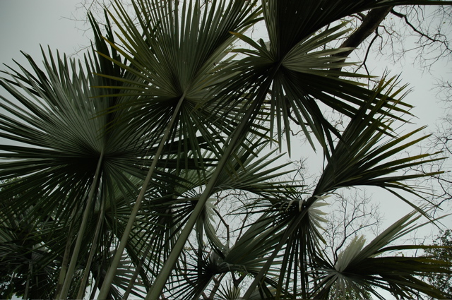

Wir haben uns endlich losgerissen und sind mit einem Haufen widerlicher Sextouristen von Mindoro zuerst mit einem großen Auslegerboot und dann mit einem Bus zurück nach Manila gereist. Die Verbindung hat reibungslos funktioniert und uns mitten in Metro Manila - genauer gesagt in Ermita - ausgespuckt.
Dort haben wir uns ein einfaches und zweckmäßiges Hotel für eine Nacht genommen und sind zu einem ausgedehnten Spaziergang durch den kleinen sehenswerten Teil der Monsterstadt aufgebrochen. Im Rizal-Park kann man vor allem Beton bewundern, in einem versteckten Winkel gibt es aber einen wunderschönen Orchideen- und Schmetterlingsgarten. Die kleine Fläche ist liebevoll angelegt und die Schmetterlinge scheinen mit Anabolika und Sedativa nicht nur riesig zu werden, sondern sitzen auch so still, dass man mit der Kamera dagegen stoßen muss, bevor sie wegfliegen.
Anschließend sind wir durch Intramuros, den alten und geschichtsträchtigen Stadtkern, gelaufen. Dort wird man an Antigua Guatemala mit seinen patinierten Häusern und Patios erinnert. Am Nordende zwischen Küste und Pasig befindet sich das Fort Santiago, das nicht nur den spanischen Eroberern, sondern im Zweiten Weltkrieg auch dem US General MacArthur als Festung diente. Von dort aus hat man einen schönen Blick in die Slums, die bis ans gegenüberliegende Ufer des Pasigs herangewachsen sind.
“Intramuros” bedeutet “innerhalb der Mauern” und so ist das ganze Viertel auch von einer prächtigen Mauer umgeben. Die außenliegende Grasfläche wird absurderweise als Golfplatz verwendet. Auf der anderen Seite des Zauns hausen die Armen Manilas im Müll.
Müll wird am Stadtstrand von Manila auch anstelle von Sand verwendet, was die Einheimischen weder vom Schwimmen abhält, noch ihre Laune beim Sonnenuntergang am Baywalk trübt. Wenn es so dunkel geworden ist, dass man den Müll ausblenden kann, wirkt die Abendstimmung neben der palastähnlichen US-Botschaft tatsächlich malerisch.
Abends haben wir in einem sehr eleganten indischen Restaurant gegessen. Da der Reiseführer nur vom Essen und nicht vom Ambiente schwärmte, waren wir die einzigen Gäste in kurzen Hosen und Sandalen. Vom letzten indischen Restaurant in Hong Kong, das in einem geschlossenen Einkaufszentrum Köstlichkeiten auf Plastikgeschirr lieferte, hatten wir uns wohl beeinflussen lassen.